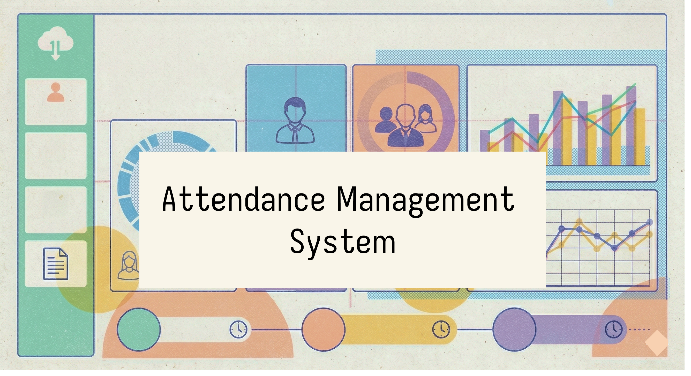
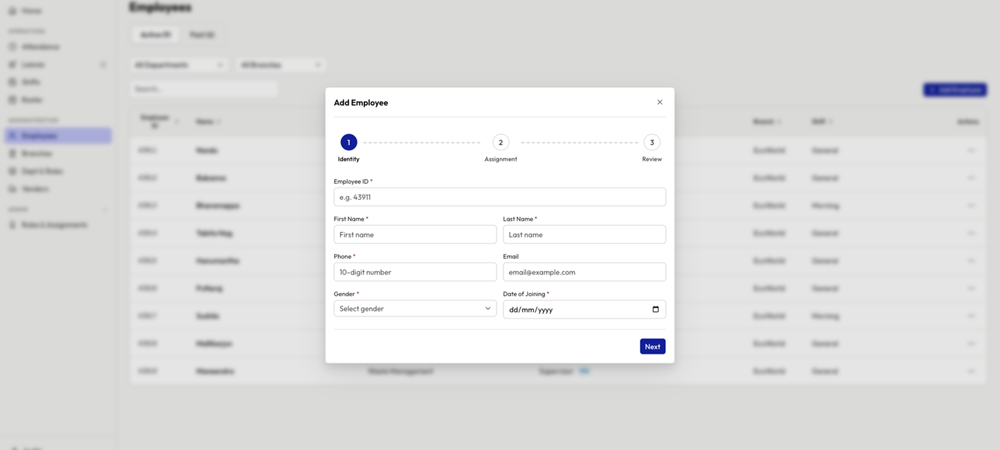
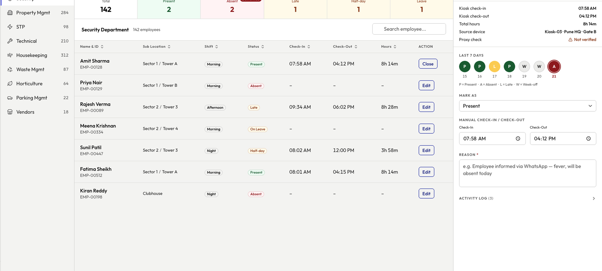

I'm Varsha Bhide, a designer who thinks in systems
Specialising in interaction design and design systems — shaping how products feel and how teams scale them. From flows and micro-interactions to tokens and component libraries.
Featured work
drag to explore
About
UI/UX Designer with 8+ years of experience building enterprise digital products across healthcare, pharmaceutical, and content services — simplifying complex workflows through accessible, scalable design.
Currently at OpenText, leading interaction design for enterprise applications. I specialise in design systems, design tokens, and AI-assisted workflows.
Available for new projects
Open to freelance and full-time opportunities
All projects
Design system work and product design — built with care.
Design system
Product
Available for new projects
Open to freelance and full-time opportunities
About me
Bio
I'm a UI/UX Designer with 8+ years of experience creating enterprise and customer-facing digital products that simplify complex workflows and deliver intuitive, scalable user experiences.
My work spans enterprise software, healthcare, pharmaceutical platforms, and content services, where I've partnered with cross-functional teams to transform challenging business processes into accessible and user-centered solutions. Most recently at OpenText, I lead interaction design initiatives for Vendor Invoice Management (VIM), leveraging a strong understanding of Accounts Payable processes and SAP S/4HANA workflows, while also contributing to OpenText's in-house eSignature platform, helping enhance enterprise applications through thoughtful interaction design and usability-driven decision making.
A significant part of my career has been dedicated to building and scaling design systems. From multi-brand pharmaceutical ecosystems to enterprise product platforms, I've led the creation of component libraries, design tokens, and scalable design foundations that enable teams to deliver consistent experiences across products and channels. I enjoy solving not only interface problems but also the systems challenges that help organisations design and build more effectively.
I am passionate about accessibility, design quality, and creating products that work for everyone. Whether defining interaction patterns, shaping design systems, or collaborating with product and engineering teams, I am driven by the belief that great design brings clarity to complexity and creates meaningful outcomes for both users and businesses.
Always curious and eager to learn, I continue to explore emerging technologies and AI-assisted design workflows that help teams move faster, think more creatively, and deliver better experiences at scale.
Experience
May 2024 — Present
Senior Interaction Designer
OpenText · Full-time · Bengaluru, Hybrid
Interaction design and visual design for enterprise products.
Oct 2023 — May 2024
Lead UI/UX
Indegene · Full-time · Bengaluru
Led the design system spanning multiple brands. Overseeing design tokens integration and platform-agnostic design characteristics.
Jun 2021 — Oct 2023
Senior UI/UX
Indegene · Remote
Built design systems for pharmaceutical firms, created websites with focus on UX, collaborated with product owners and developers. Introduced design tokens to enhance platform-agnostic design.
Nov 2017 — Jun 2021
Visual Designer
SAFEHALO Products · Freelance · Bengaluru
Brand development across video, marketing materials and application visual design.
Apr 2018 — Oct 2020
Career break — Personal goal pursuit
Printmaking
Studied under a globally acclaimed artist and printmaking instructor, expanding aesthetic skills and creative horizons.
Jan 2014 — May 2015
Visual Designer
Aditi Technologies · Full-time · Bengaluru
Visual design projects with emphasis on user research, information architecture and user journey mapping.
Jun 2013 — Jan 2014
Graphic Designer
Wipro Technologies · Full-time · Bengaluru
Graphic design for one of India's leading technology companies.
Designing a guided insurance eligibility workflow for Healthcare Providers — simplifying a complex, paper-heavy process into a real-time, personalised application that reduced friction and improved patient acceptance rates.
RoleSenior UI/UX Designer
CompanyIndegene
Year2023
TypeWeb Application
Overview
Real-time insurance verification for healthcare providers
Introducing the Electronic Patient Insurance Checker — a web application that streamlines the treatment process with real-time insurance verification. Transitioning from traditional physical records to Electronic Health Records (EHR) as a strategic decision aimed at enhancing efficiency, accuracy, sustainability, and overall patient care.
Background
Slow enrollment, complex eligibility, gaps in patient care
Major health insurance providers are designated to offer coverage for specific drugs to recipients. However, a significant hurdle lies in the intricate eligibility determination process, leading to a slow enrollment rate.
As a prominent consulting firm in the healthcare sector, the objective was to develop a web application for Healthcare Providers (HCPs) to facilitate eligibility checks — enabling HCPs and care providers to effortlessly access this information, ensuring patients receive the care they deserve and bridging existing gaps.
Problem Statement
A process so complex it increases rejection rates
Create a web application that is interactive, streamlining the eligibility determination process for a specific drug and guaranteeing high acceptance rates.
UX Strategy
Simplify, guide, and personalise at every step
The design process focused on enhancing the usability, accessibility, and simplification of the application filling process for Healthcare Providers (HCPs) to achieve the desired results. The designs aimed to streamline the process, making it intuitive, engaging, and ensuring a seamless experience for users.
Persona
Research Insights
Research & Decisions
Key Findings
Elaborate and comprehensive application document creating friction
Increased rejection rates due to inconsistent or missing information
Absence of coverage predictions and cumbersome application process hinder progress
Uncertainty around workflow causing drop-offs
Design Decisions
Application simplified by organising into digestible bite-size sections
Prompts added when questions are unanswered or answers are irrelevant
Steps to reach the "benefit report" identified and personalised per application status
Application guides users through the entire process to achieve the desired result
Focus Areas
Healthcare Providers (HCPs)
Gathering accurate information from applicants and caregivers
Eliminating redundant data entry across sections
Decreasing time needed to complete application
Streamlining workload management with delegation option at any point
Applicants
Encourage friendly and approachable interactions
Streamline the application process
Engage the applicant actively throughout
Wireframes
Interactive Prototype
Click through the prototype above — Coverage prediction · Enrollment · Prior authorization · Benefit verification
Design Decisions
Six principles that shaped the experience
Application flow
Confirmations
Each completed section surfaces a summary before the user moves on. The application never advances silently — the HCP always sees what was captured and can correct it before proceeding.
Question prompts
Human-like guidance
Contextual prompts appear when a question is left unanswered or an answer is inconsistent. Rather than showing a generic error, the system explains what it needs and why — the way a knowledgeable colleague would.
Benefit report
Visible trust markers
Coverage prediction and prior authorisation status are shown proactively — not hidden behind a final submit. HCPs can see the likely outcome before they finish, making the decision to continue or correct feel informed, not a leap of faith.
Sections · Delegation
Assisted flows
The application is broken into bite-size sections so the HCP is never confronted with the full document at once. A delegation option lets a second person take over mid-application — no progress is lost, no duplication required.
Navigation · Save
Easy reversibility
Users can return to any previous section without losing what they entered. Mandatory fields are flagged inline as you go — not in a batch error at the end — so corrections are small and local, not a full restart.
Microcopy
Language that reduces fear
Insurance and eligibility terminology is replaced with plain-language equivalents throughout. Error messages say what is needed, not what went wrong. Every label, prompt, and status is written to inform — not to intimidate.
This project involved designing an end-to-end healthcare web application that simplified a complex insurance eligibility process for both Healthcare Providers and patients — reducing friction, improving acceptance rates, and enabling guided, personalised workflows.
Building Thematic: Designing a System for Humans and AI
RoleDesigner (Solo, AI-assisted)
TypePersonal Project
Year2026
Live
Overview
Most design systems begin with components. Thematic began with a different question: what would a design system look like if it were designed not only for designers and developers, but also for AI?
The goal wasn't to build another component library. It was to create a system that could scale across products, support multiple brands, remain easy for teams to adopt, and provide enough structure for AI tools to reason about design decisions without ambiguity.
What emerged was Thematic — a token-driven design system consisting of 1,351 design tokens, 54 enterprise-ready components, multi-brand theming, comprehensive documentation, and a governance model designed to keep the system maintainable as it grows.
48
Components
1,351
Tokens
15
AI Patterns
3
Token Tiers
What we built
Core components
48 production-ready components across forms, data display, navigation, overlays, and feedback. Every component passes WCAG 2.1 AA, has keyboard interactions documented, and references only token values.
AI / Conversation patterns
15 AI-specific components — MessageBubble, ChatInput, StreamingText, AgentStatus, ActionPlan, StreamOfThought, DisclosureBadge, and more.
Foundation documentation
Colour, typography, spacing, shape, elevation, and motion all have dedicated Storybook pages showing every available token with resolved values and usage guidance.
Token audit tooling
A zero-errors-before-commit rule enforced by a custom audit script. No hardcoded values anywhere in the component library.
Phase 1 — Design Language
Before a single token was created or a line of code was written, Thematic began with a question: what should this system feel like?
The answer became the Taste Profile — a document defining the emotional target, visual references, and principles that would guide every decision that followed.
"A trusted senior colleague. Precise, warm, never loud."
Five Design Principles
Hierarchy over decoration. Every visual element needed a purpose. Typography, spacing, and alignment became the primary structural tools — no decorative dividers, gradients, or embellishments.
Density earns trust. Enterprise users spend their day working with information. Interfaces needed to present meaningful data without excessive scrolling while remaining readable.
Blue anchors, neutrals carry. A single primary blue (#1518A6) reserved for interactive and active states only. The constraint forces hierarchy to emerge through scale, weight, and structure.
Five Design Principles
States are never ambiguous. Hover, focus, active, disabled, loading, error, and success states each required their own clear visual language. Users should never guess whether an element is interactive.
Warmth comes from restraint. Slightly off-white surfaces, warm neutrals, and moderate border radii. The system feels human because it avoids coldness — not because it adds decoration.
Brief said
System did
"Restraint over abundance — one accent colour, generous whitespace, let the data speak."
A single brand colour is reserved for primary actions and active states only. Everything else stays neutral. Spacing tokens enforce breathing room at every level so the interface never feels packed.
"Warm neutrals, never pure grey. Trustworthy, not hospital."
Every background and border token has a warm stone undertone baked in. The system has no pure, lifeless greys anywhere in the palette — warmth is a constraint, not a choice made screen by screen.
"Earned emphasis — if everything shouts, nothing is heard."
Feedback colours are scoped to semantic tokens and only surface when there is something real to communicate. A token audit runs before every commit, making accidental emphasis impossible to ship.
"Craft at the detail level — the polish is in details people feel but don't consciously notice."
Shadows are built as a two-layer system so elevation feels natural rather than decorative. Borders are translucent, not solid. Radius is a six-step scale referenced by every component, never set arbitrarily.
Phase 2 — Token Architecture
With the design language established, the next challenge was translating those principles into a scalable system. The architecture was built around a clear separation of concerns — a three-tier token model: Base → Alias → Component.
Base tokens contain the raw design values: colour values, spacing scales, typography measurements, border radii, shadows, and motion settings.
Alias tokens assign semantic meaning to those values. Interfaces reference concepts — --alias-color-text-primary, --alias-color-border-default — not raw colours.
Component tokens provide the final level of abstraction, mapping semantic values to specific component slots such as --component-button-color-bg-primary. Each component gets a predictable, configurable contract.
A key rule was established early: product code never references base tokens directly. All implementation flows through the semantic and component layers — ensuring consistency, maintainability, and effortless themeability.
As the system matured, the naming convention was refined to a structured format: --component-{name}-{tier}-{property}-{state}. With predictable patterns, both humans and AI tools can identify the correct token without ambiguity.
Base
140 tokens
Raw primitive values — hex colours, pixel dimensions. Brand-agnostic. Never used directly in components.
Alias
172 tokens
Semantic roles — background-brand, spacing-padding-md. The layer designers and engineers use day-to-day.
Component
1,039 tokens
Implementation-specific slots. Enables brand overrides and theming without touching component code.
Primary Button — Token Chain
Base
Raw values. No semantic meaning. Only changed when the palette itself changes.
Colour
--base-color-blue-800
#1518a6
--base-color-blue-900
#111487
--base-color-white
#ffffff
--base-color-gray-100
#eeeeec
--base-color-gray-500
#909090
Typography
--base-font-size-3000.875rem (14px)
--base-font-weight-medium500
Spacing
--base-spacing-30.75rem (12px)
--base-spacing-51.5rem (24px)
Radius
--base-radius-md6px
→
Alias
Semantic roles. Brand-aware. Changing a brand only touches this tier.
Click any token row to trace its full chain from raw value to component usage.
Live component
Save changes
default
Save changes
hover
Save changes
disabled
Cancel
secondary
Learn more
ghost
Click any token row to trace its full chain — Base → Alias → Component
Token Breakdown
140 Base Tokens
172 Alias Tokens
1,039 Component Tokens
1,351 total
Architecture Rules
No product code references base tokens directly
All implementation flows through alias and component layers
Consistent naming format across all 1,351 tokens
AI-readable — token names are self-describing
Phase 3 — Component Library
With the token architecture established, attention shifted to the component layer. Thematic was built on Next.js and Radix UI primitives, using an open-source component foundation that was re-skinned against Thematic's token architecture and extended with the variants, states, and flexibility required by enterprise workflows.
Missing components were often discovered while designing real workflows rather than during planning. When gaps appeared, components were designed, tokenised, documented, and integrated before development continued. Nothing entered the system undocumented.
Every component doc page follows this structure, in this order. All sections are consistent across all 48 components.
01
H1 — Component name
One line. Matches the import exactly — no tagline, no ambiguity between doc and code. MessageBubble
02
Live canvas
Rendered Canvas showing the canonical "all variants" story. Gives the reader an immediate visual reference before reading anything.
03
Description
2–3 sentences. What the component is, what it renders, what the consumer's responsibility is. Written for engineers, not designers. Plain prose, no bullets.
04
Variants
One paragraph per variant. Name in bold, role described, visual distinction explained. assistantusersystem
05
States
Each non-default state gets its own live canvas and a 1–2 line explanation covering what triggers it and what changes visually. streamingerroreditedloading
06
Composition
What the component renders internally, which props wire external dependencies, and what the consumer owns. Prevents surprises during implementation.
07
Accessibility mandatory
Required ARIA roles, keyboard behaviour, screen reader announcements, and developer responsibilities. This section exists on every component without exception.
08
Playground
Interactive Controls panel wired to the Playground story. Lets the reader adjust props and see the component respond without leaving the doc page.
Phase 4 — Multi-Brand Theming
Most enterprise design systems eventually face a branding challenge: supporting multiple products, business units, or acquired companies. Rather than treating this as a future problem, Thematic was designed from the beginning to support multiple brands.
Switching between Cobalt and Terra requires changing only brand token values. Components, semantic mappings, and implementation code remain untouched. The token flow — Brand Tokens → Semantic Tokens → Component Tokens — ensures no hard-coded brand colour can leak into component code.
Cobalt
Primary Thematic identity
Deep blue core — #1C21DC
Ten-step scale from light tints to dark shades
Full semantic alias layer
Terra
Secondary brand identity
Deep forest green core — #166534
Same ten-step structure as Cobalt
Architectural proof — one token swap, zero component changes
Cobalt — Blue primary, Teal secondary, Rose tertiary
Terra — Emerald primary, Sienna secondary, Sky tertiary
Phase 5 — Foundation Documentation
A design system is only useful if people can understand and apply it consistently. Eight dedicated Storybook foundation pages were created — each with live token references, specimen displays, and usage guidance. A Foundation Overview page served as the entry point, with navigable cards and live token counts linking into each section.
Foundation Pages
Colour — palette scales, semantic mappings, live Cobalt/Terra switching
Typography — 14 type styles, specimen displays, font-weight guidance
Spacing — 10-step scale with semantic token groupings
Shape — 6 border-radius levels with usage guidance
Foundation Pages
Elevation — 5 shadow levels from subtle lift to modal depth
Data Visualisation — categorical, sequential, and diverging colour scales
Storybook Foundation overview — 1,351 tokens across Colour, Typography, Spacing, Shape, Elevation and Motion
Phase 6 — Governance & Audit
Building the system was only part of the challenge. Keeping it healthy as it evolves required governance. After all 54 components were completed, a comprehensive audit was run validating every component against seven categories of potential failure.
The mid-project audit had found 35 of 54 components with token gaps — bypassed component tokens, direct base colour references, non-existent token names. After the final migration, the audit returned clean across all categories.
More importantly, the audit process became part of the system — a reusable workflow that re-runs validation whenever tokens change, ensuring architectural standards remain intact as the system evolves.
Final Audit — All Clear
Broken token references — 0
Token leakage from base library — 0
Hardcoded colour values — 0
Unresolved typography classes — 0
Final Audit — All Clear
Unresolved transition classes — 0
Component token validity — all valid
Base-token bypasses — 0
Audit workflow — reusable, re-runnable
Tools
Storybook — where the system lives
Every component built and previewed in Storybook first — stories covering every state
MDX pages replaced auto-generated docs entirely — custom pages led by a live canvas, followed by usage rules and accessibility notes
The Storybook sidebar became the system's table of contents. If it wasn't there, it wasn't in the system
Vercel — always live, always current
Connected from day one — every push deployed to thematic.design
The documentation site was never a static snapshot. It was always the real thing
Designing in public raised the quality bar. If it looked broken in production, it got fixed
Thematic began as an experiment in creating a more structured design system. It became something broader: a design language. By combining a principled visual foundation, a scalable token architecture, a comprehensive component library, multi-brand support, thorough documentation, and automated governance, the system provides a shared framework that can be understood by designers, developers, and increasingly, AI tools. The result is not simply a collection of components — it is a system designed to make decisions predictable, scalable, and understandable regardless of whether the next contributor is a person or a machine.
Design SystemDesign TokensStrategy2023
Design Tokens
A deep-dive into what design tokens are, why they matter, and how to structure, name, and deploy them effectively across a scalable design system.
RoleSenior UI/UX Designer
CompanyIndegene
TypeThought Leadership · Article
What is a design token?
Design tokens are named entities that store visual design attributes — an agnostic, human-readable abstraction of visual styles that sync with all style files in the system. They allow teams to create a scalable and consistent visual system for UI development, replacing hard-coded values like hex codes and pixel values with meaningful names.
Why use a design token?
Design tokens are versatile
Because tokens are platform-agnostic, they are independent of any specific tech stack. A single source of truth can be implemented across web, iOS, Android, and other platforms simultaneously.
Three-tier token structure
Tokens are organized into three layers, each with increasing specificity and isolation — base tokens, alias tokens, and component tokens. Each layer references the one below it, creating a clean hierarchy that makes global changes predictable and targeted changes precise.
Difference between styles and design tokens
Types of values that can be stored
Token Strategy
By simply observing a token name, both designers and developers should intuitively understand its purpose — without needing documentation. The strategy involves grouping components categorically, assigning each to a specific category to inform the token naming convention.
Benefits of this approach:
Consolidating repetitive tokens into a single category significantly decreases total token count
Better manageability and clear visual hierarchies, reducing cognitive load
Reducing token inventory by up to fifty percent
Enhanced control over design operations with standardized tokens
Token Taxonomy
Efficiently deploying design tokens is crucial — without a clear taxonomy, token generation quickly becomes unwieldy and leads to an unmanageable inventory. A well-structured taxonomy makes naming conventions intuitive and consistent across the entire design system.
Base and alias tokens
Each alias token is designated with a distinct purpose, meaning, and function. Unlike base tokens, alias tokens are exclusively used within predefined contexts or instances. Naming conventions for alias tokens should balance abstraction with clarity — accommodating various values while conveying their intended use.
Token updates and isolation
The hierarchical structure of design tokens facilitates the concept of isolation and control within a design system. Each tier has a different scope of impact when updated.
Base tokens — zero isolation, changes affect the entire system
Alias tokens — moderate isolation, changes affect defined contexts
Component tokens — highest isolation, changes affect only that component
Token pipeline and workflow
The process utilises the open-source Figma Token Studio plugin to generate tokens and export them to GitHub in JSON format. The tokens are then analyzed through Style Dictionary on GitHub and converted to CSS variables for use in code — creating an end-to-end automated token pipeline.
Design SystemFoundationsAtomic Design2024
Design systems atom definition
A deep dive into the foundational atoms of a design system — colours, typography, elevations, spacers, and icons — meticulously defined to ensure every component that builds upon them is consistent and fail-safe.
RoleSenior UI/UX Designer
CompanyIndegene
Year2024
TypeDesign System
The foundation
The foundation is pivotal in a design system and requires meticulous planning to ensure it is fail-safe, as components derive their styles from the system's atomic elements to provide functional and beautiful product experiences.
"A design system is a perpetually evolving entity. Putting a final touch on it and declaring it finished proves to be a challenging endeavour."
Colors
The colour atoms are carefully chosen and defined within the system so that they interact harmoniously across components to create a cohesive aesthetic. The palette is divided into four major categories — Grays (neutrals), Primary, Accent (Red, Green), and System colors — following a triadic colour scheme. Colors are accessibility-checked and pre-defined for backgrounds, interaction states, and text elements, directly informing the design token definitions.
Colour palette — primary, accent & neutrals
Colour system — semantic assignments
Colour usage guidelines across surfaces, text, and states
Elevations, Spacers & Icons
Elevations and spacers serve as composite tokens within the design system, encapsulating values that define the appearance of visual elements. Elevations determine depth and shadow, contributing to hierarchy. Spacers establish consistent spacing, ensuring a balanced layout. Icons are categorised into thin and filled variants — each serving distinct purposes — with standardised sizes to align seamlessly with all interface elements.
Elevation levels & border radius scale
Spacer scale — consistent layout rhythm
Icon library — thin and filled variants with standardised sizes
Typography
Typography in the design system involves the systematic and intentional selection of fonts and text styles to create a cohesive user interface. Its design tokens are composite in nature, encompassing font families, sizes, line spacing, and weights — all defined to ensure consistency and readability across all components and screens.
Typography system — families & styles
Typography scale — sizes & weights
The atom definition file is the single source of truth for all foundational design decisions. Every component in the system derives its visual properties from these atoms, ensuring consistency, scalability, and seamless collaboration between design and development.
Design SystemDocumentationAtomic Design2023
Design System Documentation
A comprehensive framework meticulously crafted to foster consistency, streamline workflows, and elevate the overall aesthetic and functional quality of digital products.
RoleSenior UI/UX Designer
TypeDesign System
Year2023
Overview
A living design system for consistent digital experiences
In the dynamic world of design, where digital landscapes evolve at a breathtaking pace, ensuring a cohesive and harmonious user experience is paramount. Thematic.Design is a comprehensive framework meticulously crafted to foster consistency, streamline workflows, and elevate the overall aesthetic and functional quality of digital products.
At its core, the design system is more than just a collection of guidelines — it's a living, breathing organism that empowers design teams to create compelling user-centric experiences. It encapsulates brand ethos, design principles, and a shared language that resonates across every pixel and interaction.
Methodology
Atomic Design Principle
Atomic Design is a methodology created by Brad Frost seeking to provide direction on building interface design systems more deliberately and with explicit order and hierarchy. Structured from atoms → molecules → organisms → templates → pages, every decision at the foundational level cascades consistently upward — ensuring the smallest design choices scale into coherent, complex interfaces.
Foundation
Atoms — the building blocks
The atoms of a design system represent the foundational elements that serve as the building blocks for creating more complex components and structures. These atoms are the smallest units in the design system, including basic elements like typography, colours, elevations, spacing, and icons — each meticulously defined to ensure every component that builds upon them is consistent and fail-safe.
Components
Documented and prototyped for the best experience
Thematic.Design is a front-facing Figma file where all atoms and components are fully documented and prototyped. Each component page covers usage guidelines, variants, states, and interactive prototypes — giving designers and developers a single source of truth with zero ambiguity.
Prototype map — Introduction, Foundations, Accordion, Image hotspot, and Resources, all linked for seamless in-Figma navigation
A living documentation file covering the full atom layer — colours, typography, elevations, spacing, and icons — alongside key components and patterns, fully prototyped for seamless navigation and review within Figma.
Facility ManagementProduct Design + Build2026
Attendance Management System
A web-based attendance platform that consolidates employee setup, shift & leave management, daily marking, conflict detection, and monthly roster planning into one coherent tool — designed, built, and deployed end to end.
RoleProduct Design + Build
DomainFacility Management
StackNext.js 14 · TypeScript · Tailwind
StatusLive on Vercel

Overview
One tool for the whole attendance lifecycle
Facility management teams in large properties — hotels, estates, campuses — typically track attendance in spreadsheets, paper registers, or disconnected tools. The result is predictable: no single view of who is present or on leave on any given day, leave approvals and attendance marking living in separate places so conflicts go undetected, roster planning done manually, and supervisors chasing multiple sources just to find what needs attention.
The Attendance Management System was designed to consolidate all of this into one coherent product covering the full lifecycle: employee setup, shift and leave management, daily attendance marking, conflict detection, and monthly roster planning.
Problem Space
Four places to track one truth
Operations teams running large, multi-department workforces — housekeeping, security, horticulture, maintenance — had no reliable system of record. The recurring pain points were clear:
Pain points
No single view of who is present, on leave, or on weekly off on a given day
Leave approvals and attendance marking in separate tools — conflicts go undetected
Roster planning is a manual, error-prone monthly exercise
Supervisors can't surface backlog items without chasing multiple sources
Design goals
One coherent view of the full attendance lifecycle
Automatic conflict detection between leave and attendance records
Bulk roster management with undo for confident saves
A backlog that pulls unresolved items to the supervisor proactively
Information Architecture
Four layers, one direction of flow
Attendance Management System is organised into four layers that reflect the natural sequence of how a facility management operation is set up and run.
The first layer, Foundation, contains everything that must exist before the system can be used — departments and roles, shifts, branches, vendors, and employees. These are configuration decisions made once and rarely revisited, but every downstream function depends on them being in place.
The second layer, Planning, is where the monthly roster is built. Shift patterns and weekly offs are assigned here before the month begins, and the roster becomes the reference point that the attendance and leave systems read from.
The third layer, Operations, is where the daily work happens. Attendance and Leave and Time Off are the two most-used sections of the application — marking who is present, resolving gaps, and managing leave requests. These two modules are deliberately separate but linked: a leave approval in one automatically updates a record in the other.
The fourth layer, Overview, is the Dashboard — a read-only surface that aggregates the state of the entire operation into a single view. It does not originate data; it reflects it. Because it sits above all other layers, it can surface problems from any of them in one place.
The dependency flows downward. Foundation configures Planning. Planning informs Operations. Operations surfaces to Overview. A change at any layer ripples upward — a new employee added in Foundation needs a roster entry in Planning before they can appear correctly in Operations.
01 · Foundationone-time setup
Departments & Roles
Define org structure, departments, and designations
Shifts
Configure working hour templates by department
Branches
Set up locations and sub-locations across properties
Vendors
Register third-party contractors and their departments
Employees
Add and manage active and past employee records
↓ configures
02 · Planningmonthly
Roster
Assign weekly offs and manage the monthly work schedule for each employee
↓ informs
03 · Operationsdaily
Attendance
Mark and manage daily attendance, resolve backlog gaps and conflicts
Leave and Time Off
Raise, approve, and track leave requests and attendance changes
↓ surfaces
04 · Overviewalways-on
Dashboard
Today's attendance highlights, KPIs, org breakdown, and setup status at a glance
Starts the day with a site walk, ends with administrative catch-up. Accountable for payroll-relevant data accuracy. Comfortable with technology, no technical background.
Goals
Attendance status across all departments at a glance
Resolve exceptions without chasing supervisors
Reliable record for HR at month-end, no reconciliation
Delegate marking while retaining final authority
Frustrations
Three days of attendance never marked, found at month-end
Approved leaves showing as absences — systems not connected
No way to flag a wrong record and track if it was fixed
Correcting a roster spreadsheet edited by multiple people
Dashboard highlights strip each morning. Backlog tab for gap days. Leaves page for approvals. Roster review once a month.
"I just need it to tell me when something is wrong and give me a fast way to fix it."
AM
Arjun M.
Housekeeping Supervisor · 29 Oversees 16 staff across 3 shifts
EcoWorld campusReports to ShwethaPromoted 8 mo. ago
Joined as senior janitor, promoted eight months ago. Comfortable with his phone, limited web app experience. Works split shift covering morning and shift handover.
Goals
Mark attendance for his team quickly at shift start
Know who is on leave or absent before the shift begins
Approve leaves without escalating to the manager
Adjust shift times for valid late arrivals
Frustrations
Calling the manager for corrections he should handle himself
Not knowing about approved leave until someone doesn't show
Running a paper register alongside the digital system
Locked out of sections relevant to his work
Marks attendance from his phone each morning. Edit drawer for late corrections. Roster view for planning coverage. No access to config or backlog.
"I just want to mark my team, sort out any issues, and move on."
N
Nandu
Sr. HK Janitor · 34 General shift · Weekly off: Sunday
4 yrs tenureKiosk onlyNo app access
No direct interaction with the application. Touchpoint is the kiosk at the building entrance. Leave requests go to his supervisor verbally — the supervisor raises them in the system.
Goals
Arrive on time and have it recorded without ambiguity
Not worry about whether leave was approved or attendance correct
Be informed if a discrepancy affects his pay
Frustrations
Kiosk not reading his card when the reader is slow
Not knowing if his verbal leave request was entered
Finding a wrong record at month-end with no way to raise it
Scans in and out at the kiosk only. Supervisor handles all corrections, leave entries, and discrepancies on his behalf.
"As long as the machine reads my card and the record is right, that's all I need."
First-run Experience
A guided tour that replaces day-one orientation
Facility management software is typically handed to managers with minimal training.
The Attendance Management System addresses this with a guided tooltip tour that runs automatically on a manager's first visit to the application. It walks through the seven areas they'll return to every day — in the order they're meant to be set up — so the product itself does the onboarding.
Guided Tour — 7 stops
Stop 0 · Welcome Modal
Welcome to Attendance Management System
Manage your team's attendance, leaves, and roster — all in one place.
1
Sidebar
Navigation
Start with setup — Departments, Shifts, Branches — then move to daily operations.
2
Dashboard
Your daily command centre
Today's highlights, KPIs, and quick actions. Come here first every morning.
3
Departments & Roles
Set up your org structure
Create departments and roles first — employees can't be assigned without them.
4
Employees
Add your team
3-step Add Employee flow. After saving, you'll be prompted to set their weekly off.
5
Roster
Set weekly offs
Assign each employee's weekly off. Locks those days from marking and prevents kiosk errors.
6
Attendance
Mark daily attendance
Employees grouped by department. Mark status, correct times, resolve conflicts — all here.
7
Leave and Time Off
Manage leaves
Raise and approve leave requests here. Approved leaves automatically update the attendance record — no double entry.
Tour complete
The setup checklist in the top-right will guide you through the rest. You can replay the tour anytime from Settings.
Feature — Employees
Active and past employees — no data deleted
Before any attendance can be tracked, employees need to be set up. The Employees screen separates Active and Past staff into two tabs, preserving historical records without deletion. Each employee row shows their ID, department, role with seniority level, branch, and assigned shift. Adding a new employee is a 3-step modal — Identity (personal details), Assignment (department, role, shift), and Review — with mandatory field validation and role options filtered by the selected department.
Employees list — Active tab with seniority level badges (Beginner, Mid, Senior) and per-employee branch and shift assignment

Add Employee — 3-step stepper. Step 1: Identity (ID, name, phone, email, gender, date of joining). Step 2: Assignment. Step 3: Review before confirm
Feature — Dashboard
Actionable first — not vanity metrics
The landing screen is designed around what a supervisor needs to do today, not what the system wants to report. Three key numbers surface today's exceptions — late arrivals, unverified absences, and half-days — as read-only signals. The Backlog badge shows unresolved items from past days that need attention before month-end. The org breakdown table gives a department-level view of attendance percentages and raw P / A / L counts at a glance.
Dashboard home — three exception counters (late, unverified absent, half-day), Backlog badge for unresolved past items, and org breakdown table with department-level P / A / L counts
Attendance Today view — Security department, 142 employees. Present, Absent, Late, On Leave, and Half-day statuses with kiosk times and hours
Feature — Attendance
Edit drawer with conflict detection built in
The attendance screen uses a master-detail layout with per-department grouping in the left rail. The Today tab shows every employee's live status — Present, Absent, Late, On Leave, Half-day — alongside kiosk check-in / check-out times and hours worked. Clicking Edit opens a right-side drawer with the employee's last 7-day history, a Mark As dropdown, manual check-in / check-out overrides, and a mandatory reason field.

Edit drawer — kiosk data, 7-day history dots, Mark As selector, manual check-in / check-out override, and activity log
Leave edit flow — manager opens drawer, selects leave type, system recalculates kiosk status and flags conflicts automatically
Backlog tab — gap days (dates where attendance was never marked) and conflict records separated into two filterable groups
The Backlog tab is a supervisor's end-of-month catch-up tool. It surfaces two categories automatically: gap days — dates in the past where attendance was never marked — and conflict records, where an employee is both marked Present and has an approved leave on the same date. Both require a resolution action before the monthly report can be closed. Items accumulate here as conflicts and gaps are detected, so nothing slips through unnoticed.
Conflict path — trigger events, drawer-based resolution flow, and four distinct edge cases
Gap day flow — automated detection, per-employee loop for marking / skipping, and four edge cases including urgency changes and booking bridge events
Feature — Leaves
Calendar-first, with two entry paths
The leaves screen replaces a flat list with a month calendar. Chips per day show department and count, with click-to-expand popups listing affected employees. The leave modal handles approve / reject with a mandatory rejection reason, and warns when cancelling an approved leave. Sick leave and casual leave are tracked and displayed separately throughout.
Leaves calendar — month view with per-day department chips, click-to-expand employee list, approve / reject modal with mandatory rejection reason
User flow — Adding sick leave (two entry points via Attendance page + Leaves page) and casual leave (single entry point)
Feature — Roster
Month × week grid with WO-priority logic
The roster screen is the most complex: a grid of employees × days with inline editing, two views (compact month / expanded week), bulk weekly-off selection with a floating action bar, conflict indicators where leave clashes with working patterns, and save-with-undo using snapshot-based state capture. A key domain rule is WO-priority: if an employee has approved leave on their weekly off day, the day counts as WO not SL/CL, so leave balance isn't deducted. The gap day path automates detection and resolution of these scenarios.
Roster month view — Housekeeping department, June 2026. W = Working, WO = Weekly off, SL = Sick leave, CL = Casual leave. Summary column per employee on the right
Design Decisions
Opinionated choices that encode the domain
Token-first styling
All screens
Every colour in the UI references a CSS custom property rather than a hardcoded hex value. This makes the entire product themeable from a single source and ensures the design system stays consistent as the screen count grows.
Undo instead of confirm
Roster · Attendance
On save, the app captures a state snapshot and offers "Undo" via a toast for 4.5 seconds — instead of blocking the action with a confirmation dialog. Confident edits go through immediately; the escape hatch is there if needed.
WO-priority leave logic
Roster · Leaves
Facility staff are contractually entitled to a weekly off day. If sick leave falls on that day, the system stores it as WO — not SL — so leave balance isn't deducted. A tooltip on the roster cell tells the supervisor exactly why, removing ambiguity.
Sticky table architecture
Roster
The roster grid scrolls horizontally across 31 day columns while keeping employee names and the summary column pinned. Each sticky layer has an explicit z-index so column headers overlap body cells cleanly — all within a single overflow-auto container.
Closing Reflections
Five principles that shaped every decision
They are not feature decisions — they are the lens through which every interaction, prompt, and flow was evaluated.
Confirmations
Users should always know what will happen before it happens. Consequential actions — saving a record, closing a request, making a change that affects downstream data — are preceded by a moment that surfaces the outcome and asks for intent. Confirmation is not friction; it is the system's way of making sure the person acted deliberately.
Human-like guidance
Instructions, prompts, and labels should read the way a knowledgeable colleague would speak them. Not system language, not jargon, not passive constructions — plain, direct, second-person guidance that names what to do and why it matters. The closer the language is to how a person would explain something, the less the user has to interpret before acting.
Visible trust markers
A system earns trust by being honest about its own state. This means surfacing problems rather than hiding them, showing what is unresolved alongside what is complete, and confirming when an action has taken effect. Trust is not built by making the system look clean — it is built by making its reliability legible.
Assisted flows
Complex tasks should be structured so the system carries the sequence, not the user. When a task has a required order, enforce it. When a task spans multiple steps, show progress and hold context between them. The user's job is to make decisions; the system's job is to make sure those decisions happen in the right order with the right information at hand.
Easy reversibility
Errors are inevitable, especially in high-frequency operational systems. The design should assume mistakes will be made and make correction straightforward. Where an action can be undone, provide the path. Where it cannot, name the constraint clearly before the action is taken — not after. Reversibility is not a safety net; it is a prerequisite for confident use.
Full attendance management workflow from employee setup through daily marking, leave approval, and monthly roster planning — in a single product. Consistent design language across 9 screens with shared layout primitives and token-based colours. Deployed to Vercel with GitHub integration for continuous deployment.